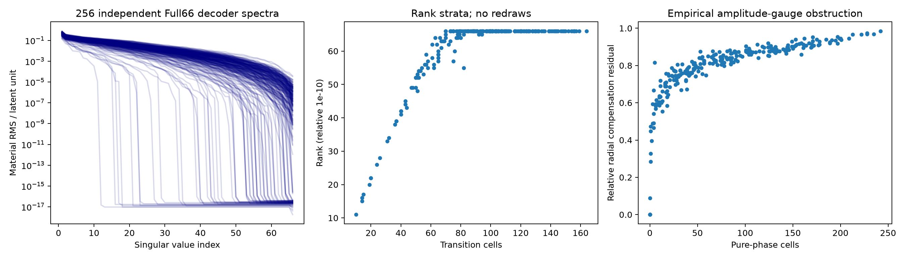

先分清参数、材料、物理与概率
不同潜变量不一定是不同材料。不同材料在有限噪声下难以区分，也不自动构成精确解纤维，更不自动带有posterior质量。R7用真实材料RMS和完整Maxwell将这些对象分开验证。
参数gauge
不同参数可表示同一材料；分层秩和有限同材料见证分开报告。
真实材料弱响应
完整Maxwell与实际材料RMS；有限端点不自动是连续exact fiber。
任务与概率资格
局部有限见证不等于posterior质量、可信区间或Bayesian风险。
本轮起点与历史事实
继承证据与本轮边界
历史固定报告、JSON和commit的逐项来源在长期研究背景及audit/history。R6已封账6,860,984 RHS不转入R7；Full66 posterior未认证；S3的V=QD完全补偿为同材料gauge；原Full比较下节时PASS不删除，强化Full-q和跨窗口HOLD也不升级。
R5-B的512新对象确认已完成，80%蒸馏收益保留门仍HOLD。R2/R4/R5材料风险正面结果、相对NLL正面结果与绝对posterior失败同时继承。F3的端点/中点资格、A17同current space无独立ROM精度增量，均未改写。
本轮只付费37,456 RHS，不训练新CNN/Flow，不重复历史512对象。理论包为47页报告与TeX、claim ledger及建议脚本，不是完整原始训练资产。真正复用输入来自已核验的本地原worktree；source/asset身份与归档范围分列。
本轮真实结果与适用范围
本轮完成了256个新prior点的零物理材料秩审计、四个已暴露开发上下文、八个全新测量驱动上下文，以及有限路径和独立数值审查。总新增 37,456 complex RHS、1,325次state/LU，50,000硬上限内封账。没有训练网络，也没有把有限候选当成posterior。
最重要的答案是：去掉decoder参数重复后，原P1中仍能得到实际0.02材料RMS的有限噪声竞争材料；但普通冻结/动态Full-J已经做到，高阶二/三阶方法没有独立增量。 精确材料solution fiber、Full66后验和强TAP新机制仍未建立。
新增complex RHS
包含拒绝和修正重放
.02 RMS Full-J竞争材料
另7/8满足pair≤1；不是credible mass
高阶独立增量
C6/8，B8/8；Full66 posterior未认证
实际主图
图的适用范围以原文为准
真实Full66材料谱和分层

图的适用范围以原文为准
全部新对象，固定ID顺序

图的适用范围以原文为准
实际成功率和费用

图的适用范围以原文为准
五节点完整响应

负结果与未运行项目
R7失败、纠错与未运行内容
历史失败只读；新增原始失败版本和账本保留。全部物理动作数值失败为0，但这不代表没有开发错误、拒绝步或算法失败。
- 初始新worktree引用本地旧main，未开始物理；立即切换明确的R6源177a9ea，记录R7T报告基线d1bdc8与公开namespace打包差异，不混用成一个实验。
- 零物理GN检查发现null(material-progress)仍包含decoder kernel，可只降低prior而不移动材料；修成有效材料子空间后再投影。修复前原prior反例和验证保留。
- DEV0随机控制在材料frame投影后lift，放大近null潜变量，造成假不可行。修成native随机位移在真实材料strong约束下的Euclidean投影；原DEV0及付费重跑都计费，不以弱随机baseline制造优势。
- 独立审查发现原锚点64次计数未覆盖LU恢复，probe verdict未显式纳入有限jet门，距离回缩后未复查trust。全部在新locked生成前纠正。DEV共150步中4步轻微trust超界，仅DEV2/C，原结果保留、整DEV2付费重放；其他146步零物理复算符合相同约束。
- 原64cap采用预留最终LU恢复槽的严格实现。新003、007触及cap且梯度仍非零；原样保留，不用GT再初始化，不叫充分MAP收敛。它们仍在noise-ball内，足以研究该合法几何中心的有限响应。
- C在locked003/004的.02档局部多项式路径不可行，记失败。普通A/B可到同距离，故不能把它解释为原材料类不存在该距离的世界。
- 六条C路径跨C² seam，不能从良好有限预测误差宣称全区间三阶正则或strict fiber。c1非零，未建立物理cubic-null机制。
- 一次行政性分析用了无NumPy的system Python而失败，改用已有研究venv后完成，0物理费用；不影响任何封存预测。
主locked预测先封存、后单独GT评分；相区来自公开decoder状态，任务定义不用GT。无新网络训练、无posterior概率softmax、无MCMC/SMC资格升级、无新layout、无3D、无实验测量数据。原R5-B保留率HOLD和R6强化控制HOLD仍保持。
完整成本与资源缺口
R7实际费用
总新增37,456 complex RHS /50,000上限；未用12,544。forward10,600、derivative26,856；state/LU各1,325；19个物理job、物理动作失败0。拒绝试探、恢复及修正重放全部计费。
| 用途 | RHS |
|---|---|
| 首次实际probe | 200 |
| 最终DEV4 | 7200 |
| 保留的DEV修正前/重放 | 2952 |
| 八份新truth | 64 |
| 八对象anchor、探索、路径 | 26336 |
| 普通DEV20态profile | 576 |
| 同材料与交叉copula物理控制 | 128 |
| 合计 | 37456 |
物理动作wall14.7676秒；包含持久化/setup的物理job wall72.2100秒、CPU67.4749秒；物理进程峰值189,972,480 bytes。E1另7.18秒与490MB峰值。编辑、文献、绘图、打包和交付不伪称都被物理job钟覆盖。没有训练、GPU或云服务。
本轮fresh anchor是direct-Probit64，目标是几何；不能与R6不同优化流程的1.73秒换算成成像系统加速比。R6的6,860,984 RHS不重计；九次合法T/J复用的cold-equivalent288 derivative RHS是历史cache权利，不是新支付。
中央追加账本在完整Release；snapshot及独立逐行replay在仓库。C的24 RHS setup按四档整体计一次，缺失端点不得构成加速主张。
各路线判定：原文呈现
R7逐项科研裁决
| 判定 | 状态 | 证据与限制 |
|---|---|---|
| GO_HIGHER_ORDER | NO_GO | 冻结C未优于普通B，覆盖6/8对8/8，另有setup费用；只针对本实现，不否定所有高阶理论。 |
| GO_PHYSICAL_FIBER | NOT_ESTABLISHED | 没有连续exact Maxwell fiber证明，c1非零、仅有限节点。 |
| GO_FINITE_NOISE_AMBIGUITY | SCOPED_GO | 真实材料RMS.02、B8/8竞争且7/8 pair≤1，原prior/物理/噪声内成立。 |
| FULL66_POSTERIOR | UNQUALIFIED | 本轮没有试图用12个上下文认证全后验。 |
| TASK_IDENTIFIABILITY | LOCAL_OR_EMPIRICAL_ONLY | 固定任务与照明的局部导数及有限见证，不是credible interval/Bayes风险。 |
| GO_TAP | REDIRECT | 高阶导数、商测度、LS冲突均有先例；未建立优于强普通方法的Maxwell新机制。 |
Full66存在stratum-specific decoder gauge与generic regular点无尺度gauge同时成立；没有普遍一维商降维。四个非均匀受控copula构造能推广R6的映射反例，但未求原Full66条件prior或posterior权重。
最值得下一步的是：控制一阶谱后再检验有限补偿冲突的独立用途，或先求局部gauge上的真实条件prior对材料任务的影响。不要扩大本C Explorer网络，不重启一轮大Flow，不将任务积分理论与本次候选数量合写为Bayesian算法成功。